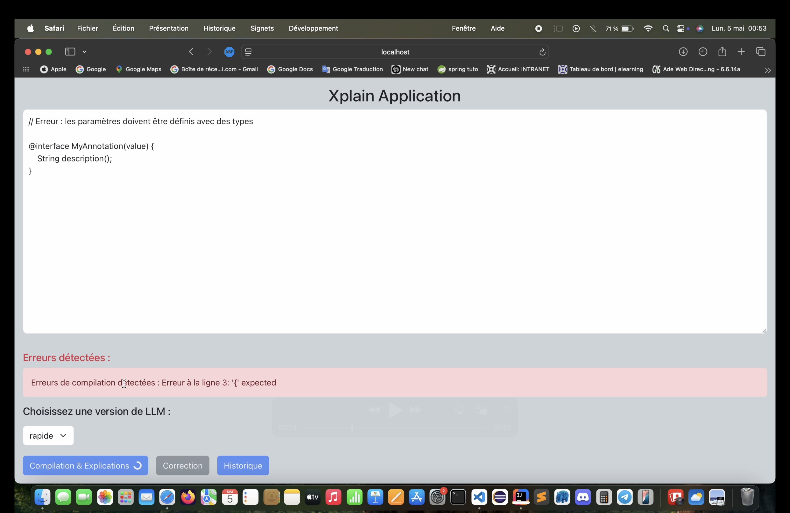

Application web · IA01 / WEB & IAAssistant de programmation
Xplain
Une application web qui compile du code, explique les erreurs de manière accessible et propose des pistes de correction générées par un modèle de langage.
Explorer le projet